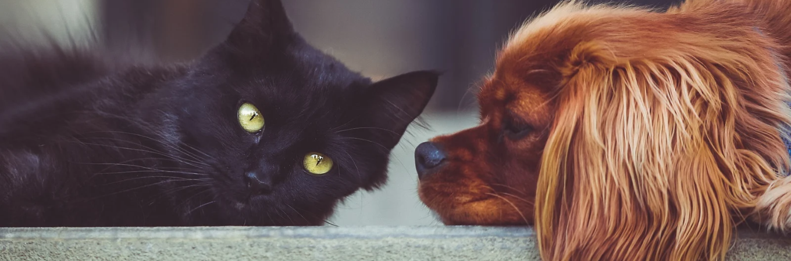
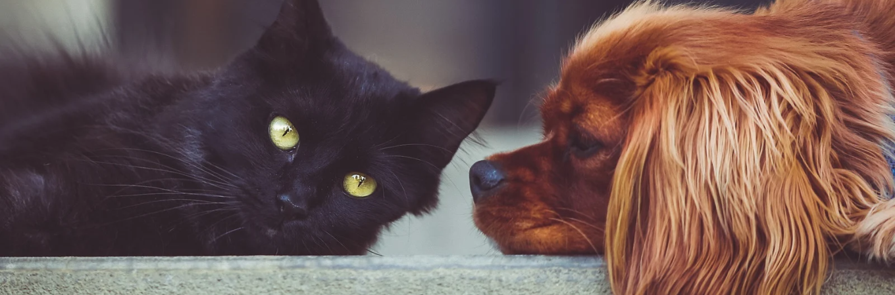

Aqui na PetCat seu animal é tratado com amor
Com uma visão de atendimento hospitalar de excelência para os pet's, a PetCat foi fundada em 2023 para suprir a necessidade da nossa região. Com consultas gerais e especializadas, vacinas, cirurgias, internação, higiene bucal, exames laboratoriais, exames de imagem e farmácia veterinária.
A PetCat é um local de tratamento completo para seu pet, com grandes centros veterinários e profissionais excelentes, tudo para oferecer o que há de melhor no tratamento de seu bichinho.
Veterinários
Serviços
Consultas
Gerais e especializadas como cardiologia, oftalmologia, oncologia e muito mais.
Cirurgias
Castrações e higiene bucal, além de cirurgias complexas.
Vacinas
Importadas e de alta qualidade. Além de vacinas para doenças especificas.
Internação
Separada em 3 setores com ala exclusiva para gatos e área de isolamento.
Medicamentos
Antibióticos, antiflamatórios, colírios, carrapaticidas entre outros.
Exames
Exames bioquimicos e exames de imagem como raio-x e ultrassom
Check Up
Buscando a prevenção como melhor forma de manter seu animal saudável.
Atendimento 24h
Urgências e emergências, aberto 24 horas inclusive aos finais de semana e feriados.
-